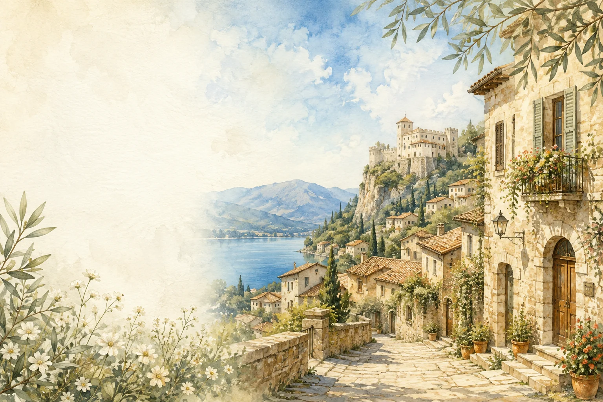
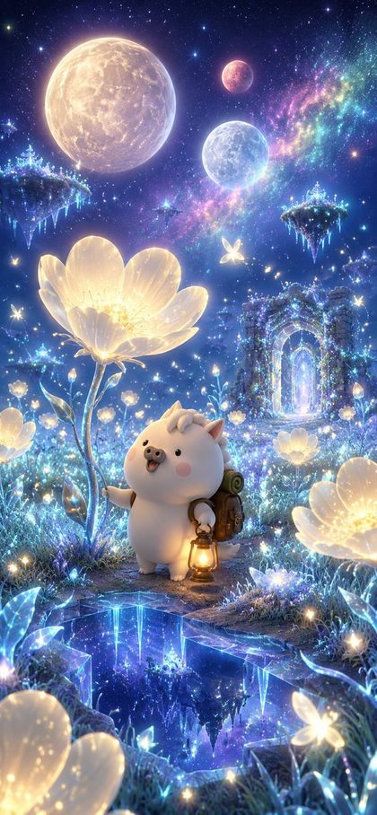
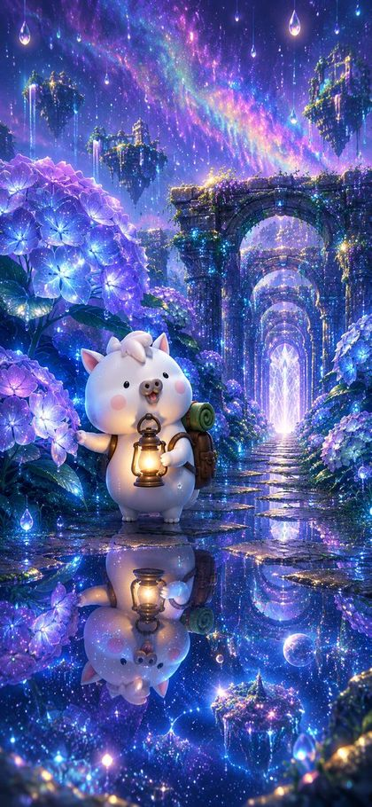
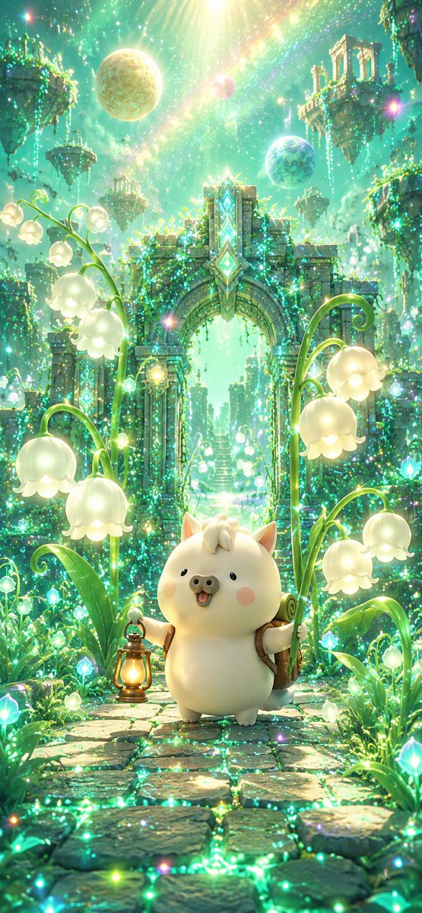
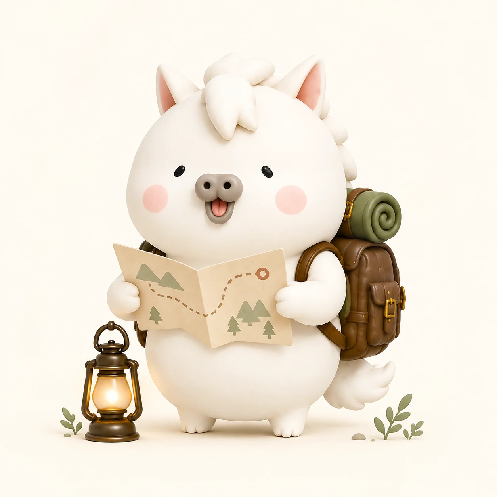
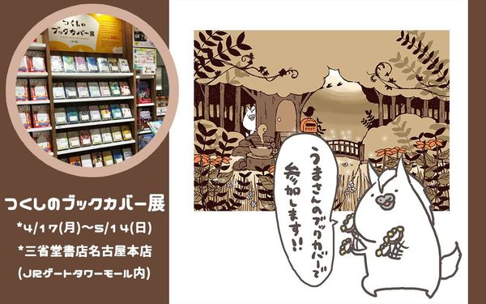
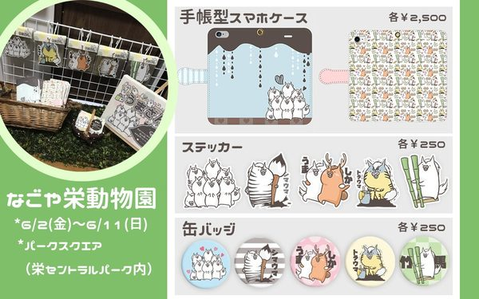
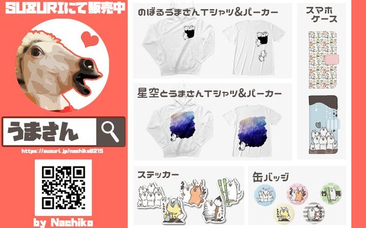
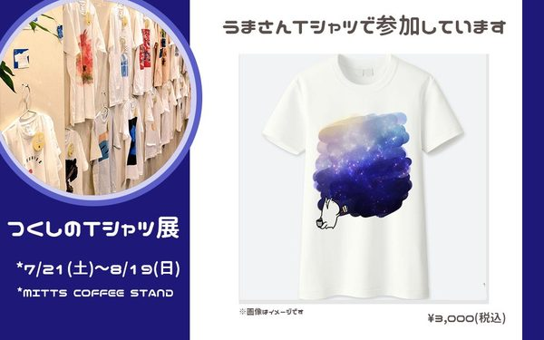

NEWSお知らせ
作品で遊ぶPLAY
Webの手がかりをたどるミステリーも、うまさんと撮る記念写真も。気になる作品から、小さな冒険を始めてみませんか。
体験レポートEXPERIENCE
次の休日は、物語の中へ。謎解きや没入型アートなど、実際に行ってきた体験の記録です。
最新の体験レポート

出会う体験が、
わたしの世界を、
少しずつ広げてくれる。
ジャンルから探す
壁紙・カメラFREE
スマホの中でも、旅先でも。うまさんと無料で楽しもう。



スマホ壁紙
スマホを開くたび、小さな旅へ。好きな風景を壁紙に。
スタンプ・グッズSHOP
会話にも、おでかけにも。お気に入りのうまさんを見つけよう。
うまさんについてABOUT

うまさんは、あなたの「ちょっと気になる」に寄り添う、小さな冒険の案内役です。謎解きやアートの世界へ出かけたり、写真やグッズで毎日を彩ったり。日常が少しだけ楽しくなる出会いを、この場所からお届けします。
うまさんは2016年、LINEスタンプから生まれました。そこからグループ展やデザインフェスタ、Tシャツやステッカーへと活動が広がっています。いまは、自分で手がかりをたどって遊ぶWeb探索型の作品もつくっています。
2024年から続けているnote「うまさんの体験型エンタメ冒険記」は、100記事を超えました。謎解きやARG、没入型アートなど、訪れた先で見たことを書きためています。記事はすべて、実際に足を運んだ体験をもとに書いています。
これまでの活動

つくしのブックカバー展
なごや栄動物園
SUZURIグッズ販売開始
つくしのTシャツ展